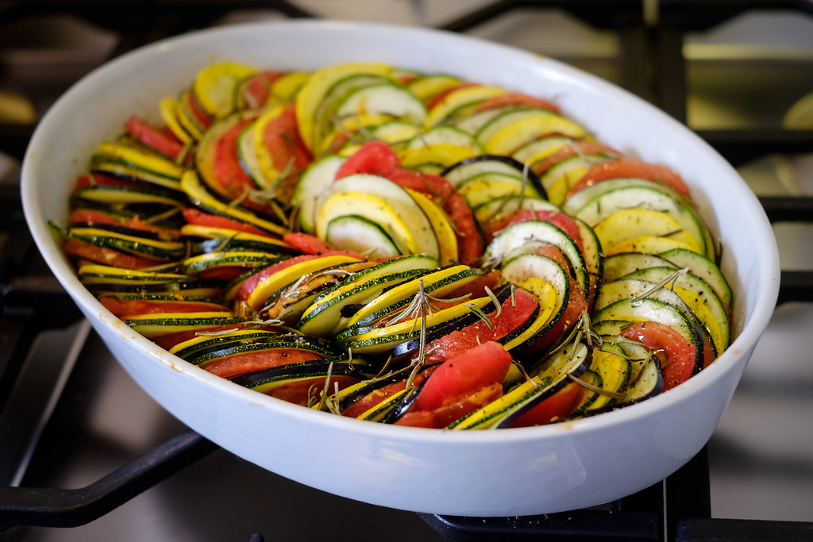

Ratatouille Recipe
Home

Description
Ratatouille, a classic French Provençal dish made with layered slices of zucchini, eggplant, tomato, and bell pepper, slow-cooked in a rich, herbed tomato sauce. Simple, colorful, and full of flavor.
Ingredients
- Eggplant
- zucchini
- Yellow Squash
- Red bell pepper
- Yellow bell pepper
- tomatoes
- Onion
- Garlic
- Olive Oil
- Salt
- Black Pepper
- Fresh Thyme
- Fresh Basil
Steps
- Slice all vegetables thinly (eggplant, zucchini, squash, peppers, tomatoes).
- Sauté garlic and onion in olive oil until soft.
- Spread the sautéed mixture in a baking dish as the base.
- Layer the sliced vegetables in a spiral or rows on top.
- Drizzle with olive oil, season with salt, pepper, and herbs, then bake until tender.
- ENJOY!